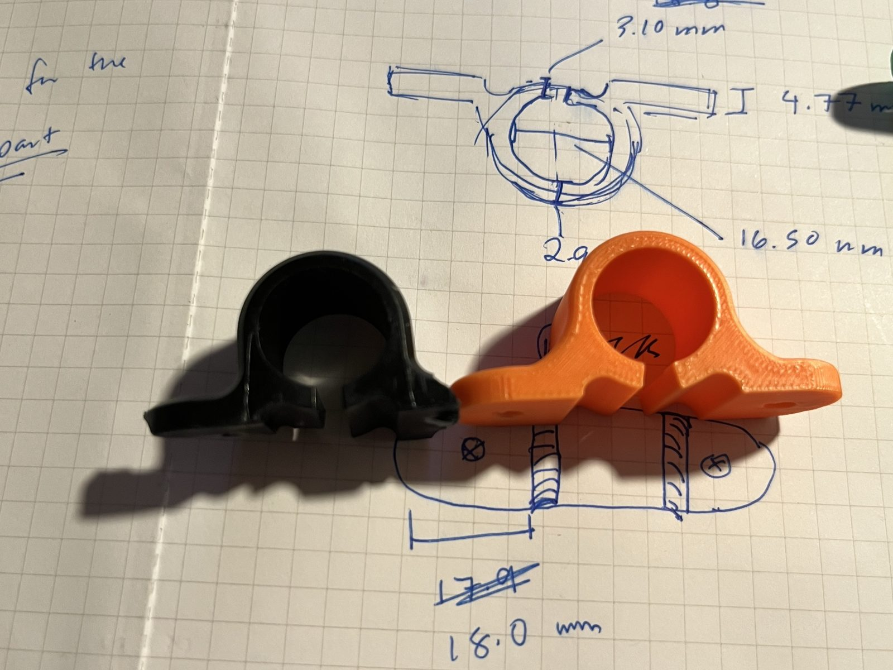
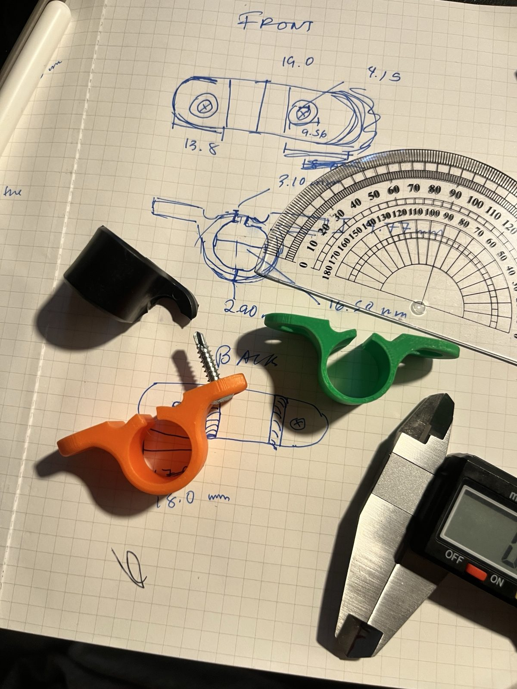
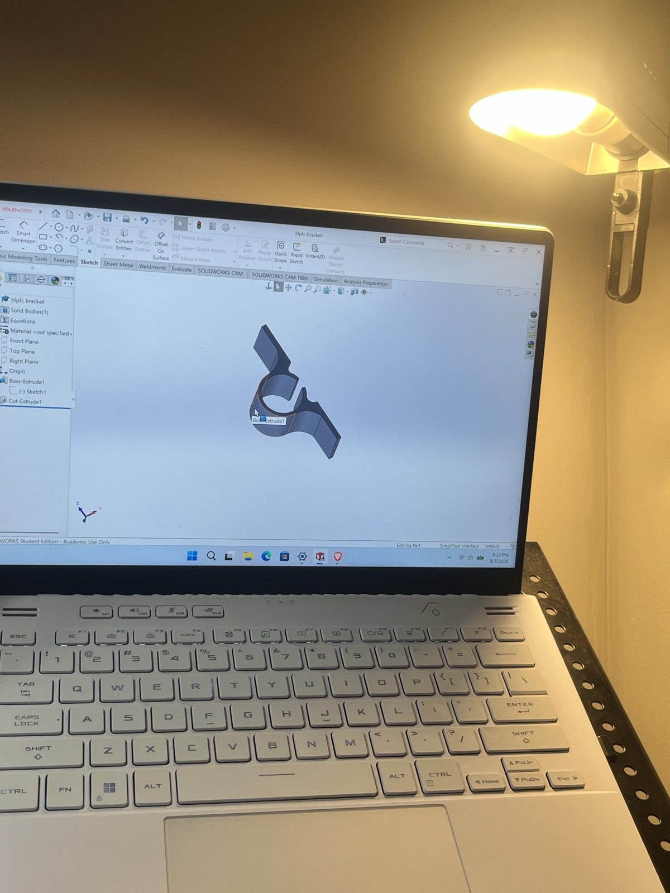
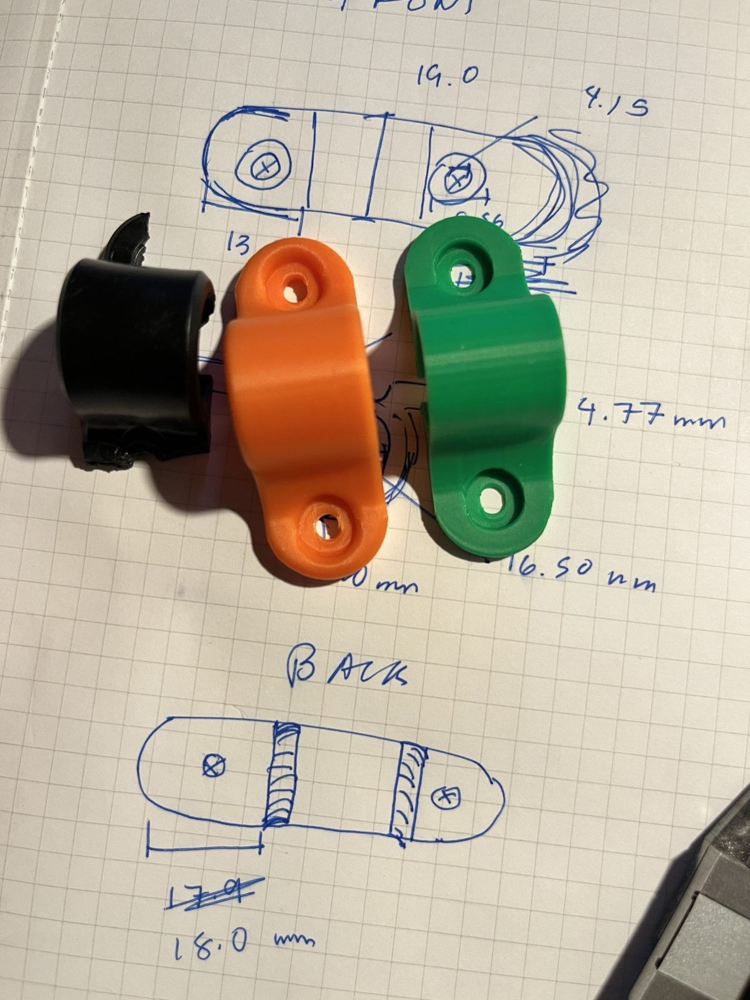
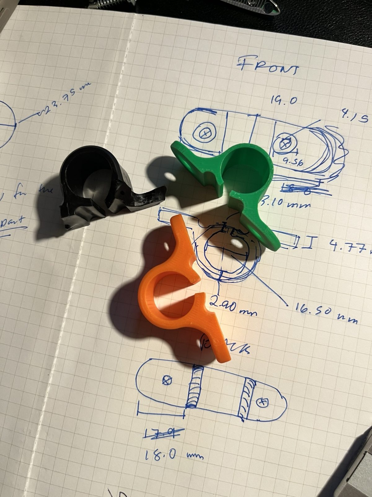
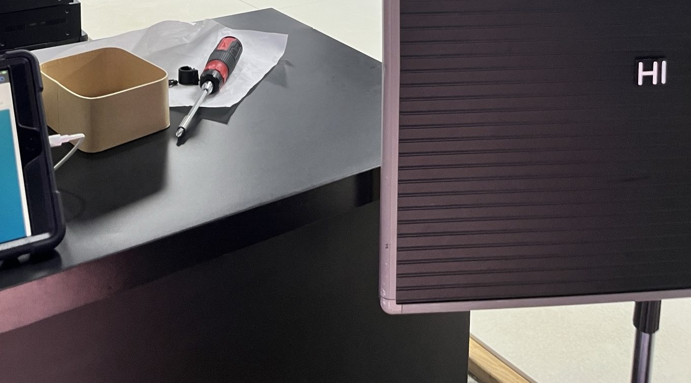

Sign Bracket
A broken sign bracket at the gym where I teach, and the long way around to printing a new one.

Summary
Problem. The bracket holding the sign at the gym where I teach broke, and the sign hung from its post by the top for months.
Approach. I measured the remnants and the intact top bracket, drew a u-shaped bracket with mounting points in SolidWorks, and printed it a few millimeters thicker than the original where it had sheared.
Iteration. The first print didn't flex enough to clamp the post. I changed one dimension in the CAD file, about two minutes of editing, and printed again.
Result. The second print clamps and the sign is back up.
The story
“Welcome to Highland Park Fight Club. Please take your shoes off before stepping on the mats.”
My first day of teaching was the last day our sign stood properly. At the end of class, a little bump from someone’s shoulder sent the post downwards, and my attempt to catch it with my bare foot proved unsuccessful.
The black magnetic rectangles scattered across our white mats, and the remnants of a certain bracket aside from a few chunks was nowhere to be found.
For months, the sign dangled off its post secured only from the top.
When summer began, and I had no prospects of an internship. My schedule was a six day week of teaching children jiujitsu from one side of Mount Washington to the other, and a few hours at the physics lab… I decided that now, I had time to sit down and CAD. It shouldn’t take long, anyhow.
The next day at my desk job, between being asked to debug someone’s inclinometer(“the thing that measures angles doesn’t start at zero” according to one student)… I opened up Solidworks for the first time since spring break. “License expired.” Great.
New school year, new license. The process for a clean uninstall is pretty standard. Until it isn’t. The installation manager crashes. I restart the computer, restart the uninstall. Nothing.
Again.
Again.
Again.
Each time, the uninstall fails. Whatever. I guess I can manually uninstall the files, right?
I spent the next three days going through my files, GitHub, Reddit, and multiple forums deleting.
Finally, the install works. We’ve got CAD!
I start the drawing. “Hey, this feature isn’t working…?”
“Wait, why can’t I click on that point?”
“This install is messed up.”
“I’ll fix it over the weekend.”
The weekend comes. 9am judo. I barely slept, oh well. “I’ve got to go today,” I tell myself.
The morning ends with me being carried by a 100kg national competitor, a plank of wood taped to my leg. I dislocated my knee cap.
“Do you live with a place with lots of stairs?” The doctor asks.
Yes. The scariest most unstable spiral staircase I’ve ever experienced in my life. The landlady told me she would never rent to anyone who wasn’t young and healthy when I signed my lease. But rent was cheap, and at the time I was athletic enough to run up and down without any trouble… just a little fear.
I guess I never thought what would happen if I wasn’t healthy. If I couldn’t do the things I took for granted.
And so for a month and a half, I lived with my mother. Less stairs, not scary stairs.
My Solidworks install was in purgatory, so was my laptop, and my leg.
Every effort I spent getting better was half me wanting to get back to my own place and get my damn computer back, and half wanting to come back to my sport. Every day was tough and long. But many moments were free, and I spent my time thinking obsessively. I thought about the faces of the bracket. It was a typical u-shaped bracket with mounting points. Nothing special. But I hadn’t really made anything like that.
My education with CAD was not at all formal. My first project was a mug tutorial off YouTube. And most of the work I had done involved Weldments and sheet metal. Different skills, I suppose. I needed to think about how to draw this thing most elegantly. I was most afraid of an undefined contour. I didn’t quite know how to fix that except to draw it differently or to “trim/extend and pray.”
I decided before the doctor did that I was good enough to handle stairs. And for three days I locked myself up trying to answer “what’s wrong with my computer?”
Finally, I decided, maybe it’s time to let go of it all. A flood to start anew. Rufus helped me wipe the whole machine.
I couldn’t ask, not anymore. I just wanted… to draw a bracket and print it.
My new install of Solidworks finally worked. And at 11pm, it was time to get drawing. The workflow was indescribable. I measured, I drew. I drew, and I measured. I had the top bracket as reference, and the remnants. They weren’t exactly the same but… they were incredibly helpful for estimates.
I got as close as I possibly could to what I felt like was the correct dimensions. If there was anything I learned at a physics lab, it was how to measure. And if there was anything I learned leading a sub team in FSAE without formal instruction, it was tolerance.

The print came out. It was beautiful. I made it a few millimeters slightly thicker than the original where it would have sheared.

Then I thought - “wait, I need this to clamp down.”
I try to bend it, “there’s some give, I guess.” But it might not be enough.
So I open the CAD file again, and I pray. “Please don’t be overdefined if I edit this dimension.”
And it was as though the CAD gods had heard my prayer. And the last six weeks of deep thought sketching in my head had paid off. I could edit that specific area without the entire thing exploding.
The second print comes out, success.

The entire CAD process from start to finish took the entirety of around a half hour. Editing, maybe two minutes. But it was six weeks of creating it inside my own head.

Two days later, I return to the fight club for the first time since that weekend. Only to try my beautiful brackets.
The first print.
It’s just as I thought… it flexes, but not nearly enough.
The second print? It’s beautiful. It’s perfect.
The sign is back in action.

Two letters on the board, “Hi.”
Presumably from the name of the gym - “Highland Park,” rather than a greeting. But I leave it.
It stays that way for a while.